Administration des systèmes - Situation 4 – Powershell - Parametrage DHCP
Contexte : CUB
Réalisé par : Lucien BESCOS
Date de réalisation : 14/12/2025
Sommaire
- Contexte : CUB
- Question 1 : Modifier la maquette
- Question 2 : Rédiger la fiche de tests de votre maquette et faire valider celle-ci par votre enseignant
- Question 3 : Activer et paramétrer le service DHCP sur votre serveur ServeurPrimaireX en respectant le cahier des charges
- Question 4 : Update de la maquette Packet Tracer
- Question 5 : Méthode de mise en place des deux types de failover
- Question 6 : Mettre en place le Actif/Actif
- Question 7 : Fiche tests Actif/Actif
- Question 8 : Mise en place du Actif/Passif
- Question 9 : Fiche tests Actif/Passif
- Question 10 : Note sur les vulnérabilités avérées du service DHCP
- DHCP Starvation (épuisement d’adresses IP)
- Rogue DHCP (serveur DHCP illégitime)
- Conclusion
4ième situation - « Paramétrage et sécurisation du service DHCP »
Question 1 : Modifier la maquette
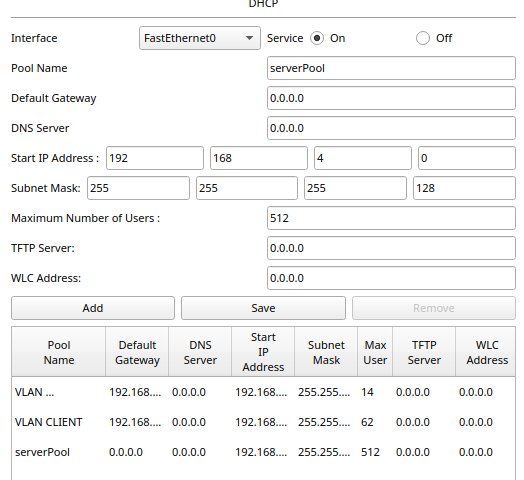
Question 2 : Rédiger la fiche de tests de votre maquette et faire valider celle-ci par votre enseignant
Test effectués : Demande de requête DHCP pour l’attribution d’une configuration réseau
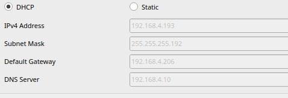 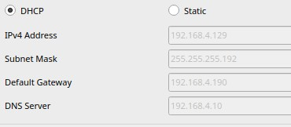
Question 3 : Activer et paramétrer le service DHCP sur votre serveur ServeurPrimaireX en respectant le cahier des charges du document 1
Utiliser des commandes PowerShell pour créer l'étendue DHCP pour le sous-réseau du service « clients » en respectant les informations du document 1.
Dans « Ajouter des roles »
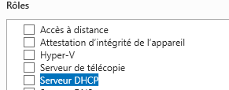 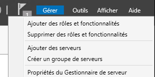
Dans PowerShell :

Création des plages :
Add-DhcpServerv4Scope -Name "Clients" -StartRange 192.168.4.129 -EndRange 192.168.4.189 -SubnetMask 255.255.255.192
Add-DhcpServerv4Scope -Name "AdministrationSystemeReseau" -StartRange 192.168.4.193 -EndRange 192.168.4.205 -SubnetMask 255.255.255.240
Pour vérifier :
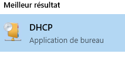 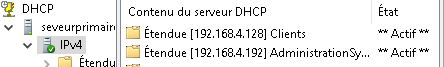
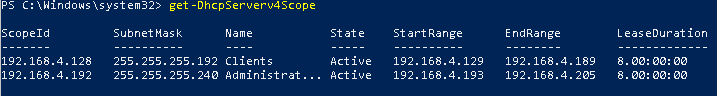
Exclusion d’adresse :
Add-DHCPServerV4ExclusionRange -ScopeId 192.168.4.192 -StartRange 192.168.4.195 -EndRange 192.168.4.200
Réservation d’adresse :
Trouver l’adresse MAC du client
Ici notre client : 08-00-27-2D-AB-B4
Add-DhcpServerv4Reservation -ScopeId 192.168.4.192 -IPAddress 192.168.4.201 -ClientId 08-00-27-2D-AB-B4 -Description "Poste Specifique pour le service"

Mettre un bail de 4h :
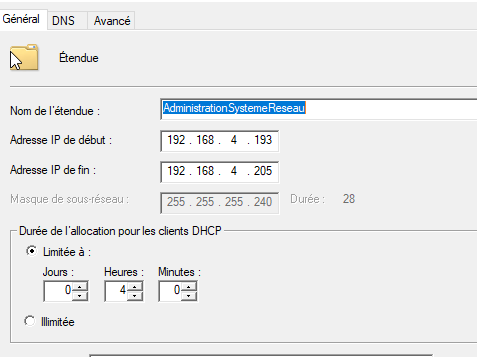
Pour le VLAN clients
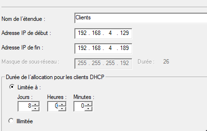
Distribution des passerelles
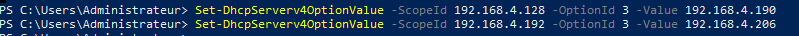
Distribution du serveur DNS
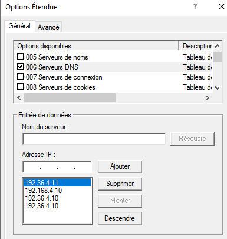
Distribution du domaine
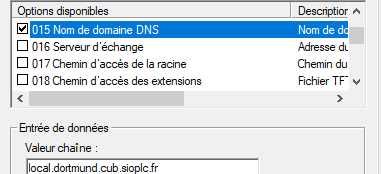
Question 4 : Update de la maquette Packet Tracer
Packet Tracer réalisé
Question 5 : Méthode de mise en place des deux types de failover
Voir Fiche procédure 5 Admin sys
Question 6 : Mettre en place le Actif/Actif

Question 7 : Fiche tests Actif/Actif
Voir fiche tests
Question 8 : Mise en place du Actif/Passif

Question 9 : Fiche tests Actif/Passif
Voir fiche tests
Question 10 : Note sur les vulnérabilités avérées du service DHCP
Le service DHCP présente certaines vulnérabilités importantes pouvant être exploitées par des attaquants.
DHCP Starvation (épuisement d’adresses IP)
Un DHCP Starvation consiste à saturer le serveur DHCP en lui envoyant un grand nombre de requêtes d’adresses IP à l’aide de faux identifiants MAC.
Le serveur alloue alors toutes les adresses disponibles de son pool à ces faux clients, ce qui provoque l’épuisement des adresses IP.
Conséquence :
Les vrais utilisateurs ne peuvent plus obtenir d’adresse IP, ce qui les empêche de se connecter au réseau.
Contre-mesures :
- Activer la fonction de protection DHCP Snooping sur les switchs
- Limiter le nombre d’adresses par port ou par utilisateur
- Surveiller les requêtes DHCP anormales via les journaux du serveur
Rogue DHCP (serveur DHCP illégitime)
Principe :
Un Rogue DHCP est un serveur DHCP non autorisé branché au réseau.
Il peut répondre plus rapidement que le serveur légitime et attribuer de fausses adresses IP, passerelles, ou DNS.
Cela permet à un attaquant d’intercepter ou rediriger le trafic réseau (attaque de type “Man-in-the-Middle”).
Conséquence :
Risque de vol d’informations, perte de connectivité ou compromission du réseau.
Contre-mesures :
- Activer DHCP Snooping pour bloquer les réponses DHCP provenant de ports non autorisés
- Définir clairement les ports “trusted” (où le serveur DHCP officiel est connecté)
- Surveiller régulièrement le réseau pour détecter tout serveur DHCP suspect
Conclusion
Le protocole DHCP, bien que pratique, reste une cible privilégiée pour les attaques réseau.